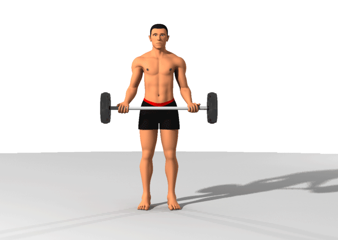
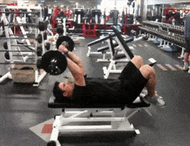

Bicep Curl
1. Stand with your feet shoulder-width apart and grasp the barbell with an underhand grip, hands slightly wider than shoulder-width apart.
2.Keeping your elbows close to your sides, curl the barbell up towards your shoulders while contracting your biceps. Pause briefly at the top of the movement.
3. Slowly lower the barbell back down to the starting position and repeat for the desired number of repetitions. Remember to maintain proper form and avoid swinging your body to generate momentum.

Skull Crusher
1. Lie on a bench and hold a barbell with an overhand grip, arms extended straight up over your chest.
2. Keeping your upper arms stationary, lower the barbell towards your forehead by bending your elbows, making sure to keep your elbows in line with your shoulders.
3. Pause for a second at the bottom of the movement and then extend your arms back to the starting position, squeezing your triceps at the top. Repeat for desired reps.
